Fintalent OSW — Guideline
Two roles, one workflow. Ops prepares the work — builds a list, fills it with contacts, assigns it to an SDR. SDR works it every day — finds, emails, follows up, classifies. Each flow keeps the core steps to the shortest happy path (each step with its own screenshot); anything optional sits in Edge cases.
ADMINA1 · Create an SDR / KAM account (ADM.0.1)
A1.1 · Open Admins
- User Management → Admins → the users table (Actions · Avatar · Name · Email · Roles · Created Date). Every SDR/KAM/Admin lives here.
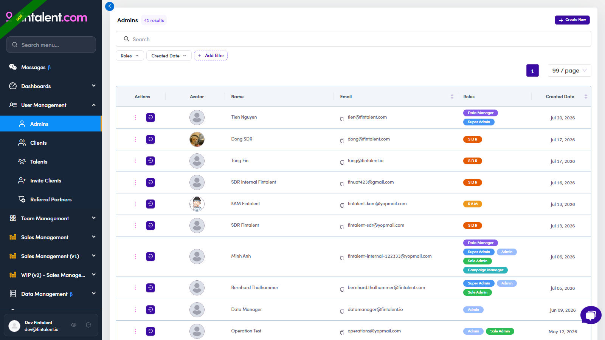
A1.1 — Admins: role badges per user, + Create New, and a Login-as icon in Actions.
A1.2 · Create the account
- Click + Create New (top-right of the Admins table) → the Create new Admin form opens.
- Fill in the details — First name · Last name · Email (= their login username; use the company email) · Phone (optional) · Roles* (pick SDR or KAM — tick both if they cover both) · Password (auto-generated). Regenerate / copy the password → edge A1.x.1.
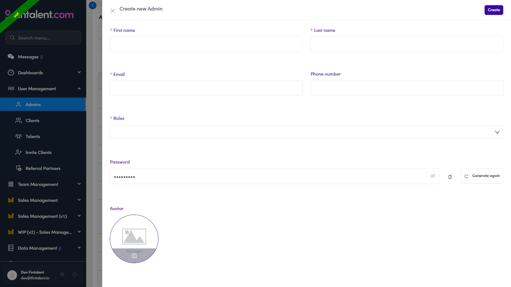
A1.3 — Create new Admin form: Name · Email · Roles* · auto-generated Password · Avatar. - Click Create → the new user appears in the table. Verify the role badge in the Roles column, then ask them to log in.
A1.x · Edge cases
- Generate / copy the password. In the Create form the Password is auto-generated. Click Generate again to make a new one, copy it, and send it to the hire through a private channel. They can change it after their first login.
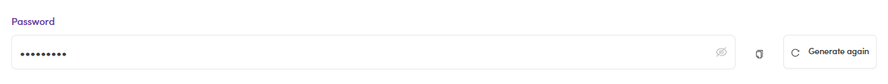
A1.x.1 — the Password field: masked value · 👁 show/hide · copy · Generate again. - Edit an existing account. Admins → the user's row ⋮ → Edit / View Details → the Update Admin Information drawer. General Setting = name · phone · avatar · Roles (fix a wrong role here — no need to recreate). Email Configuration = Signature (auto-appended to every email they send) · Sender Name · default Attach files → Save. The drawer also carries Billing · Payment · Activities Log tabs (an SDR typically only needs General Setting + Email Configuration). (Best to set the signature here before their first send; the SDR can also edit their own later.)
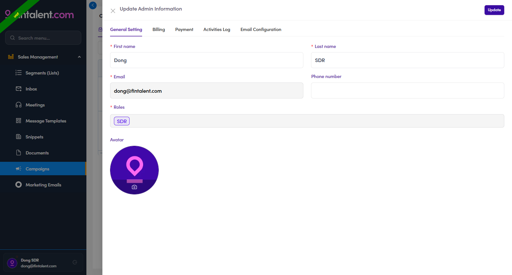
A1.x.2a — (an SDR account) General Setting: name · phone · avatar · Roles. 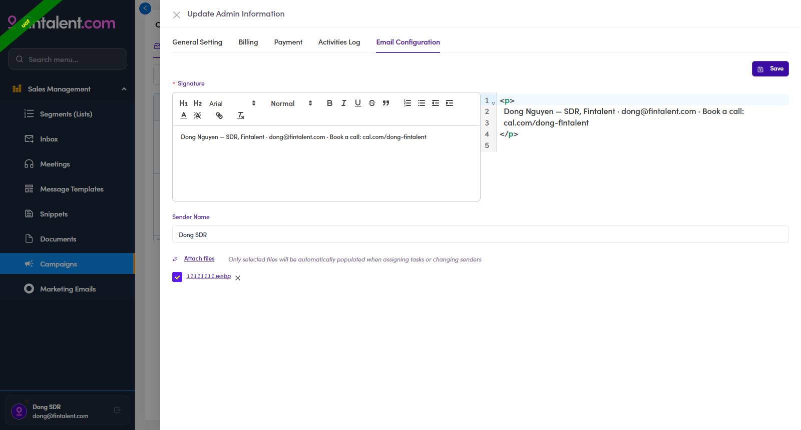
A1.x.2b — Email Configuration: Signature · Sender Name · Attach files → Save. - Act truly as them — "Login as". To use the app as that person (their assigned lists, their mailbox), on the Admins table each row has a purple "Login as" button in the Actions column (also reachable from the row ⋮ menu). Click it to enter the app as them. (This is how every SDR screenshot in this guide was captured.)
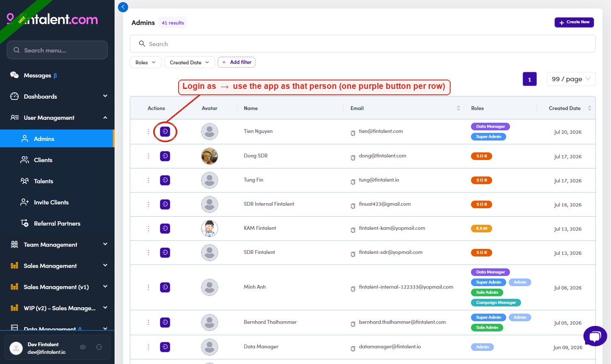
A1.x.3 — the Login as button (circled): one purple button per row in the Actions column. - Preview what they'll see — "View as role". The eye icon by your profile (bottom-left) → pick SDR → a banner "Viewing UI as SDR". It's UI-only: you still see your own data and your real permissions still apply — it just shows which menus/buttons/columns that role gets.
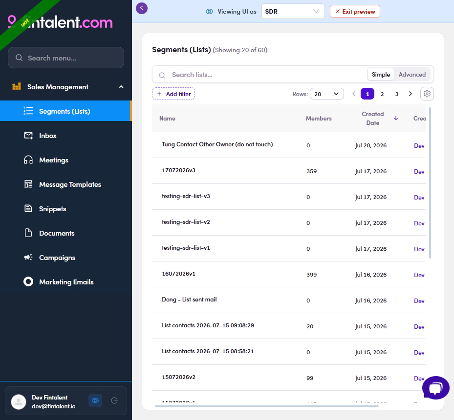
A1.x.4 — View as role → SDR: the preview banner + the trimmed SDR menu.
ADMINA2 · Create a single contact (ADM.0.3 · Admin/Ops only — the SDR view has no Create Contact button)
A2.1 · Open the Create Contact form
- Sales Management → Contacts → the contacts table. Top-right sits + Create Contact (Admin/Ops only — the SDR view has no such button).
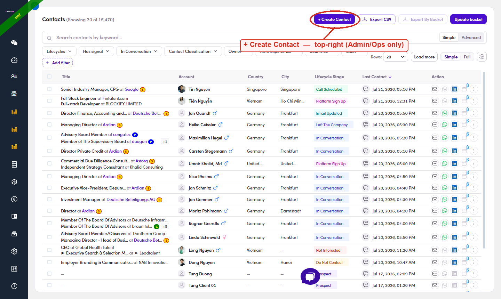
A2.1 — + Create Contact (circled) at the top-right of the Contacts page. - Click + Create Contact → the Create Contact drawer opens: LinkedIn or email required + an optional Name.
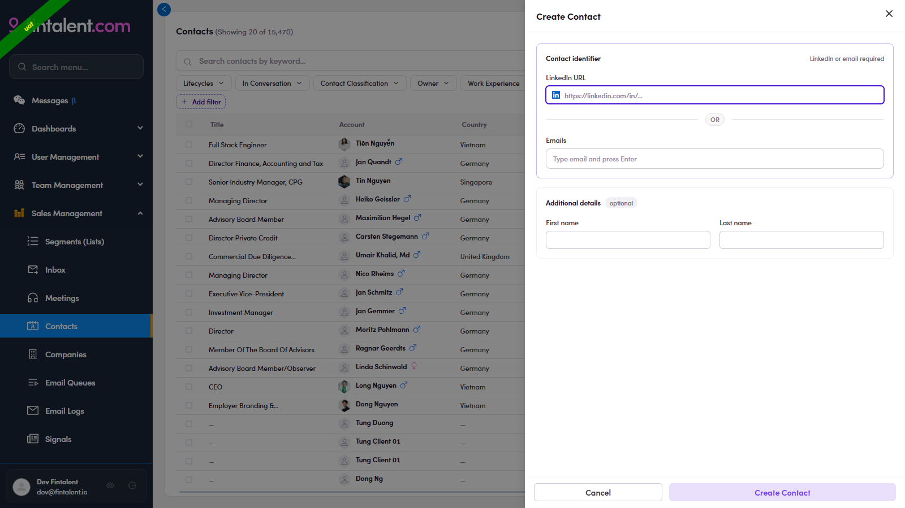
A2.2 — the empty drawer: LinkedIn URL OR Email, plus optional First/Last name.
A2.2 · Enter the details & create
- Enter a LinkedIn URL or an Email (≥1 required — it's the dedupe key; the card shows ✓ Ready once valid). With a LinkedIn URL the system auto-pulls the person's name · total years of experience · avatar · location · work experience (when available) — so First/Last name are optional. → Create Contact.
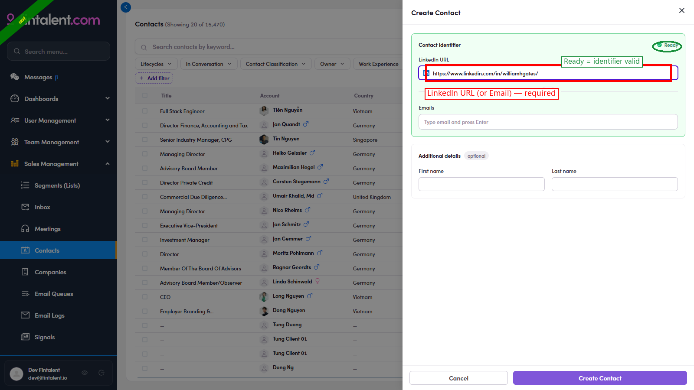
A2.3 — example: a LinkedIn URL entered → ✓ Ready. On Create, the system crawls name · years of experience · avatar · location · work experience back into the contact.
A2.x · Edge cases
- Duplicate found (email / LinkedIn already exists). Entering an identifier that already exists opens the "Duplicate Found" panel with the existing contact — edit them there, or Back to enter different info. Nothing duplicate is ever created.
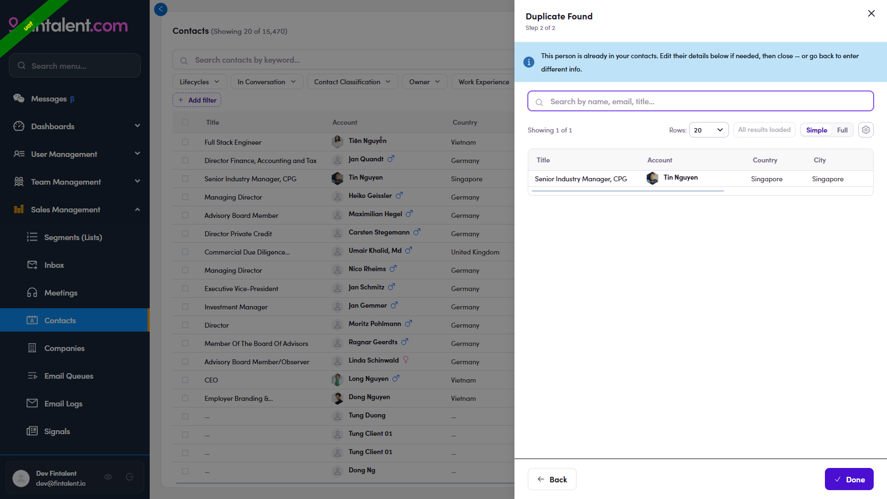
A2.x.1 — Duplicate Found: the existing contact appears; Back / Done. - Link / relink a work experience to a company. On a contact's Work Experience, an unlinked row (company shown as plain text) has a Link company icon → a company picker (the company must already exist in Companies; 0 results → shorten the keyword) → clicking links immediately (toast "Linked") → a bonus "Apply to N other contacts" fixes the same mislink everywhere. A row that's already linked shows Relink instead — it re-points to a different company (company-scoped: moves every experience matched to the old company).
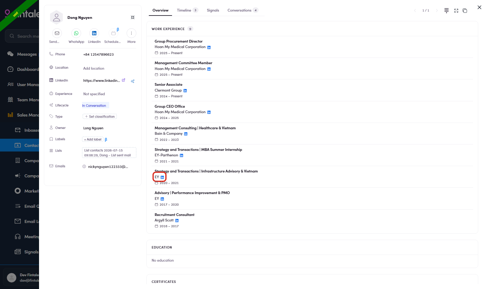
A2.x.2a — the Link icon on an unlinked experience row. 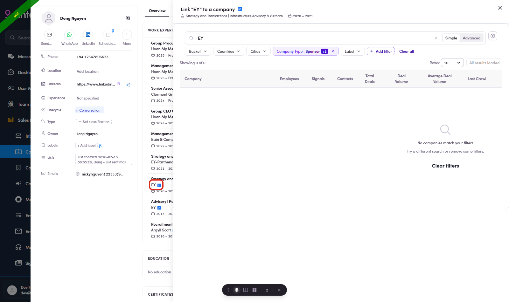
A2.x.2b — the company picker (company must exist; 0 results → shorten keyword). 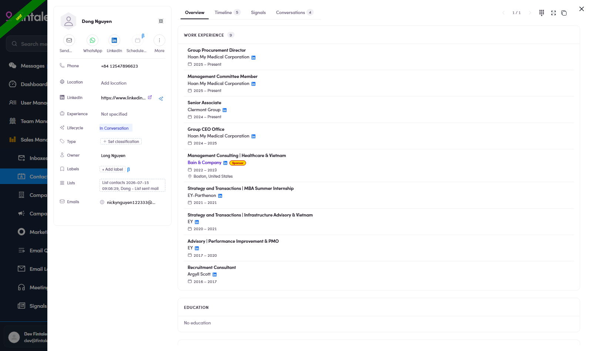
A2.x.2c — result: company as a purple link + type badge; a Relink icon on the linked row. - Neither LinkedIn nor email. Creation is blocked — the form requires one of the two.
- Supplement the info (edit after create). A fresh contact — even one auto-filled from LinkedIn — is often missing details the crawl can't reach: Phone, Contact Classification, Owner, extra emails, lifecycle, etc. Open the contact → the detail drawer → click the empty field → type or pick the value → it auto-saves (toast "Saved"). Fill these in before assigning the person into a working list.
OPSO1 · Your Ops workspace
O1.1 · Your Ops menu
- Under Sales Management an Ops/Admin sees more than an SDR: besides Segments · Inbox · Meetings, you also get Contacts and Companies (the data tables), plus Email Queues · Email Logs · Signals. Head to Segments (Lists) — the page has tabs Talent · Company · Contact, per-row Actions (👤+ add members · assign · 🗑 delete), an Assignee column and a Category column (the SDR label).
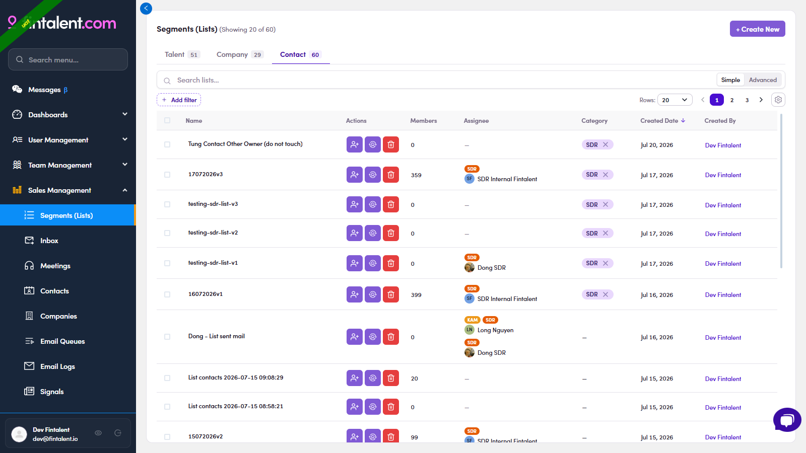
O1.2 — Segments (Lists) as Ops: full menu on the left (incl. Contacts/Companies), tabs, Actions · Assignee · Category columns, + Create New.
O1.x · Edge cases
- Preview what the SDR sees — "View as role → SDR". From your profile control you can switch the UI into the trimmed SDR view (no Contacts/Companies; just their lists + Inbox). Use it to check exactly what a rep will get before you hand a list over.
O1.x.1 — View as role → SDR: the preview banner + the trimmed SDR menu.
OPSO2 · Create a list
O2.1 · Open Segments (Lists)
- Left menu → Sales Management → Segments (Lists). This is the page that holds every list.
O2.2 · Switch to the Contact tab
- At the top, click the Contact tab. Why this tab: the page holds three kinds of list — Talent (candidates), Company (companies), and Contact (people you email). When you click + Create New next, the modal's Type field is locked to whichever tab you're on — you can't change it there. An outreach list must be a Contact list, so stand on the Contact tab first; otherwise you'd create a Talent/Company list you can't use for outreach.
O2.2 — the three tabs (Talent · Company · Contact) + + Create New (top right). Type is locked to the active tab.
O2.3 · Create the list
- + Create New (top right) → the Create List drawer: Type (Contact, pre-set) · List name* · optional SDR list checkbox (see edge case) → Create. The empty list now appears on the Segments page, ready to fill (O3).
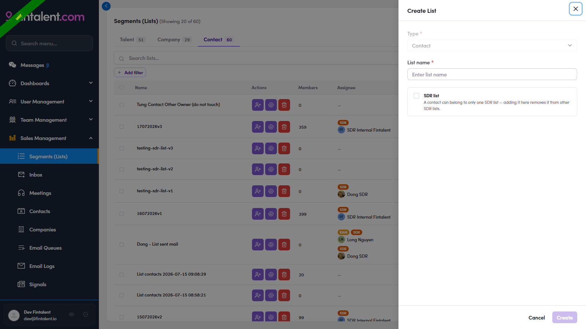
O2.3 — Create List: Type · List name · SDR list checkbox (with the exclusivity rule).
O2.x · Edge cases
- "SDR list" — one contact, one SDR list. In the Create List drawer, tick the SDR list checkbox (circled below) to make it an exclusive rep list. The rule: a contact can belong to only one SDR list — if they're already in one, adding them to a second SDR list is skipped (they stay in the first, and a toast tells you — see O3.x.6). This is what guarantees a rep's contacts aren't also being worked by another rep. Non-SDR lists have no such limit.
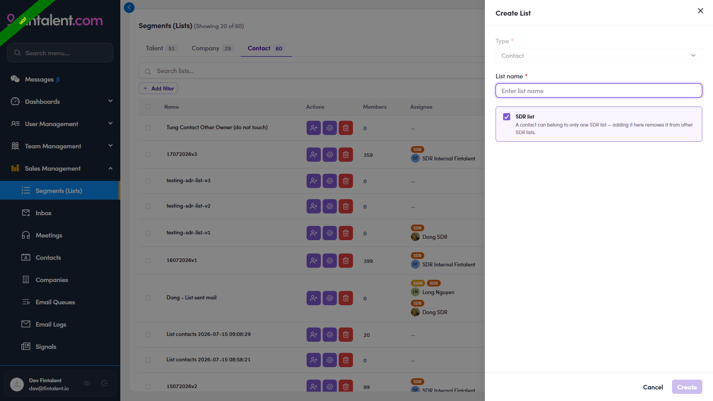
O2.x.1 — the SDR list checkbox ticked (card highlighted) + its exclusivity rule. In-app copy mismatch — real behavior is skip-and-keep-firstThe Create-List checkbox helper currently reads the opposite ("A contact can belong to only one SDR list — adding it here removes it from other SDR lists", i.e. move). The real behavior is skip-and-keep-first: a contact stays in its first SDR list and the second add is skipped (see O3.x.6). That in-app helper copy should be corrected. - Edit the name. You don't re-create a list to rename it. Step by step: ① open Segments (Lists) → the Contact tab → find the list's row. ② Click the list name → it turns into an inline text field. ③ Type the new name → confirm with ✓ (or ✕ to cancel). The row updates in place.
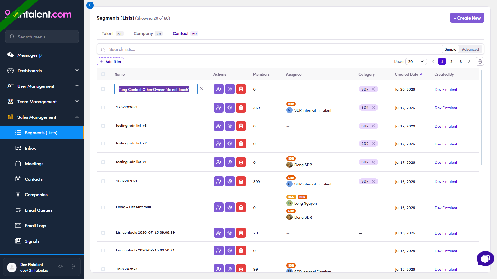
O2.x.2 — click the list name to rename it inline (✓ save · ✕ cancel). - Edit the category (the SDR label). The category is what makes a list an exclusive SDR list (one contact → one SDR list, see O2.x.1). Step by step: ① open Segments (Lists) → the Contact tab. ② Tick the list's checkbox → an action bar appears. ③ Click Set SDR to give it the SDR category, or Clear category to remove it. (A list that already has the category also shows an ✕ on its SDR badge in the Category column — a one-click clear.)
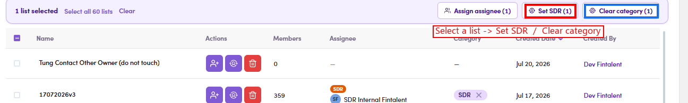
O2.x.3 — select a list → the action bar's Set SDR / Clear category (the Category-column badge ✕ also clears). - Delete a list. On the Segments row's Actions column click the red 🗑 Delete icon → confirm. This removes the list only — the contacts themselves stay in Contacts and in any other list (same idea as removing members, just for the whole list).
OPSO3 · Add contacts to list
O3.1 · Add from the Contacts page
- Open Contacts (left menu) → the full contact table.
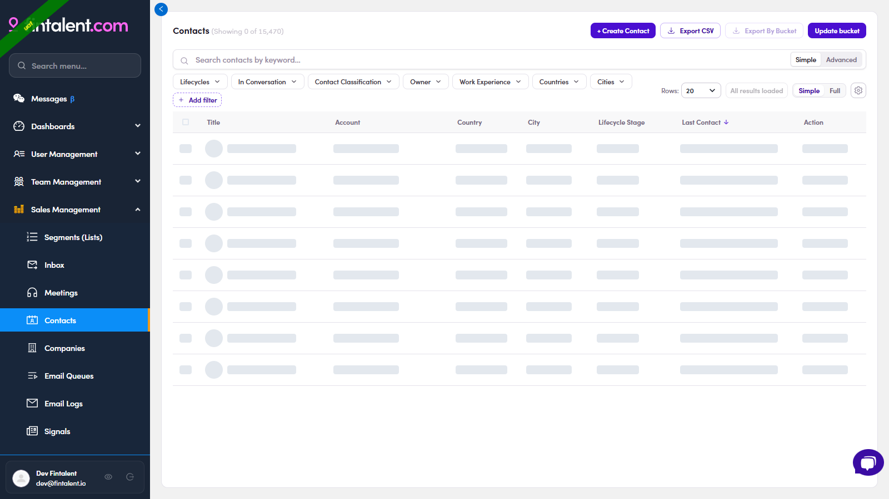
O3.1.1 — Contacts: the table + filter bar + search. - Select the contact(s) — tick the checkbox on each row you want. A blue action bar appears: Add to list · Add to campaign · Add to marketing email · Delete contacts · More.
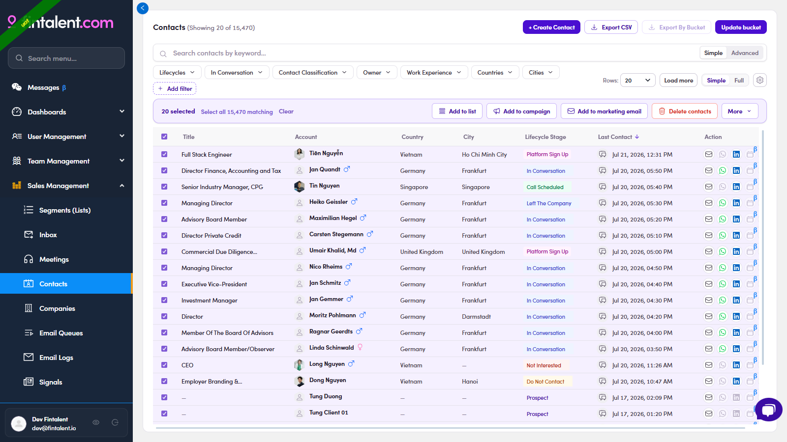
O3.1.2 — tick rows → the action bar with Add to list. - Click Add to list (in the action bar) → the Add to list drawer opens with Apply to = Selected (n).
- Select the target list — search and tick the list you want in the drawer.
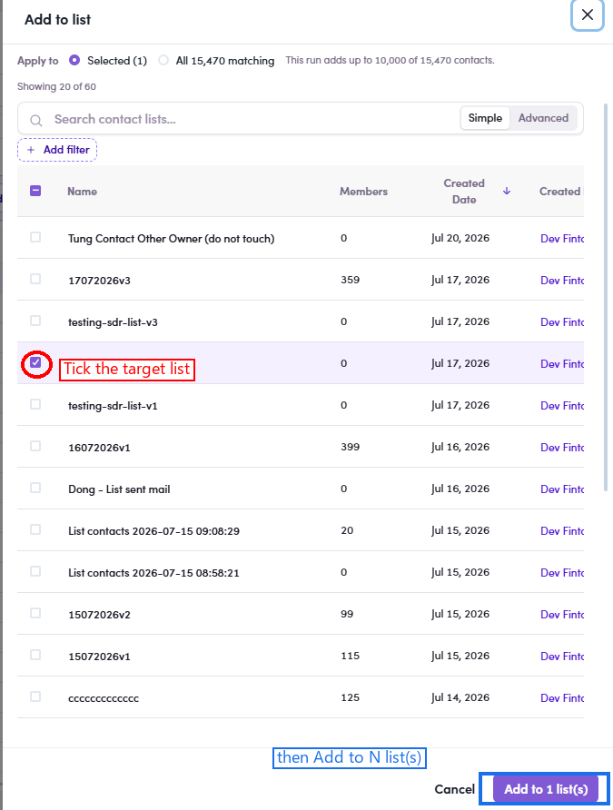
O3.1.4 — Add to list drawer: Apply to = Selected → tick the target list (circled) → Add to N list(s). - Click Add to list (the drawer's confirm button) → done. Verify on the list's Members tab (the count can lag a moment).
O3.2 · Add from inside the list (list detail)
- Open the list detail — Segments (Lists) → the Contact tab → click the list → its Members tab.
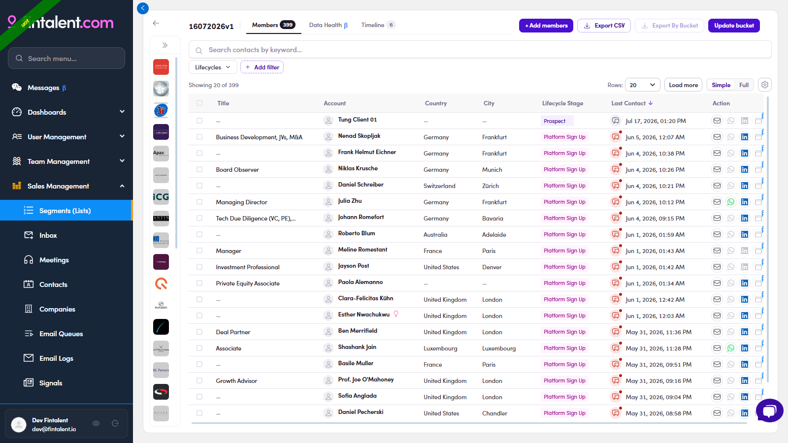
O3.2.1 — list detail, Members tab → + Add members (top right). - Click + Add members → the Add contacts to "<list>" picker opens. Contacts already in this list are auto-excluded (a Custom List filter chip does this), so you only see people you can still add.
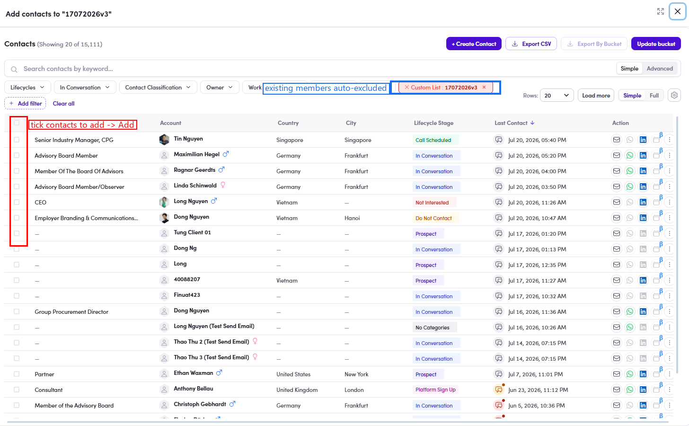
O3.2.2 — the picker: the Custom List chip auto-excludes current members; tick contacts on the left. - Select the contact(s) — tick each row, or the header checkbox (whole page), or Select all N matching. A "N selected" action bar appears.
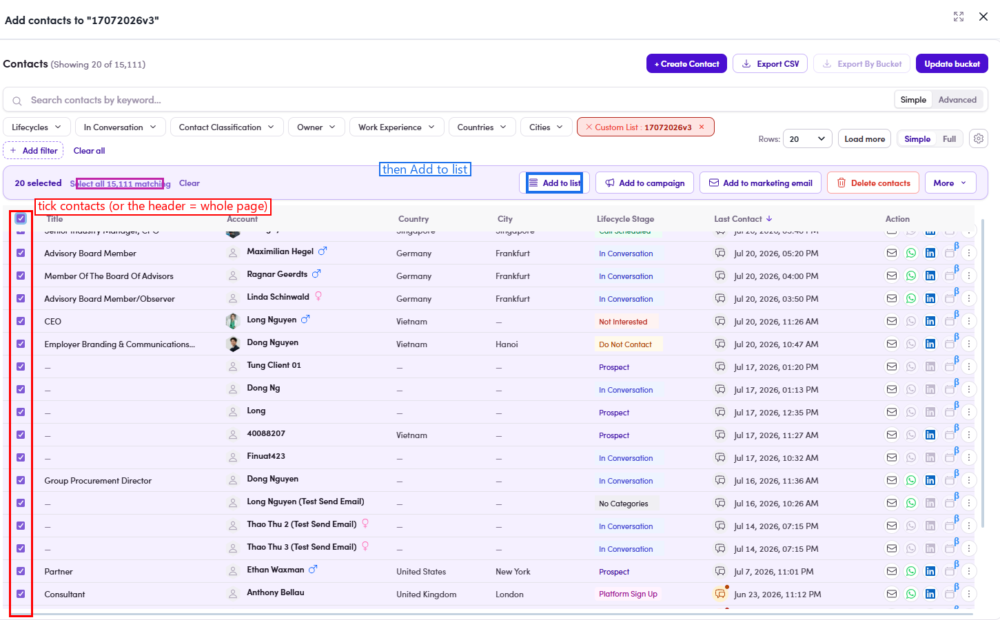
O3.2.3 — rows ticked → 20 selected · Select all matching + the action bar's Add to list. - Click Add to list in the action bar → they join the list; the Members count updates.
O3.3 · Add from a company's Employees tab
- Open Companies (left menu) → click a company → its detail.
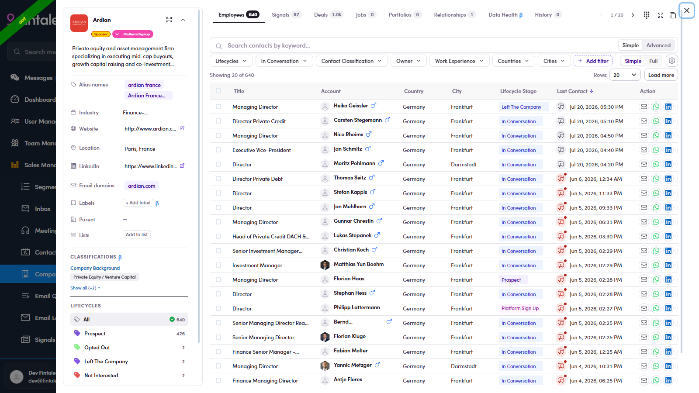
O3.3 — a company's Employees tab: tick employees → Add to list. - Open the Employees tab — the company's whole staff on file (Foresight Group shows 485).
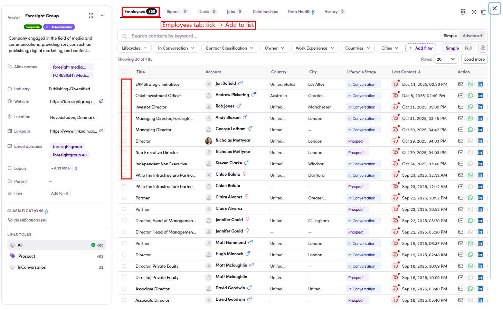
O3.3.2 — the company detail's Employees tab: the full staff list with the same filter bar. - Select the employee(s) — tick each row, or the header checkbox / Select all N matching. A "N selected" action bar appears with Add to list.
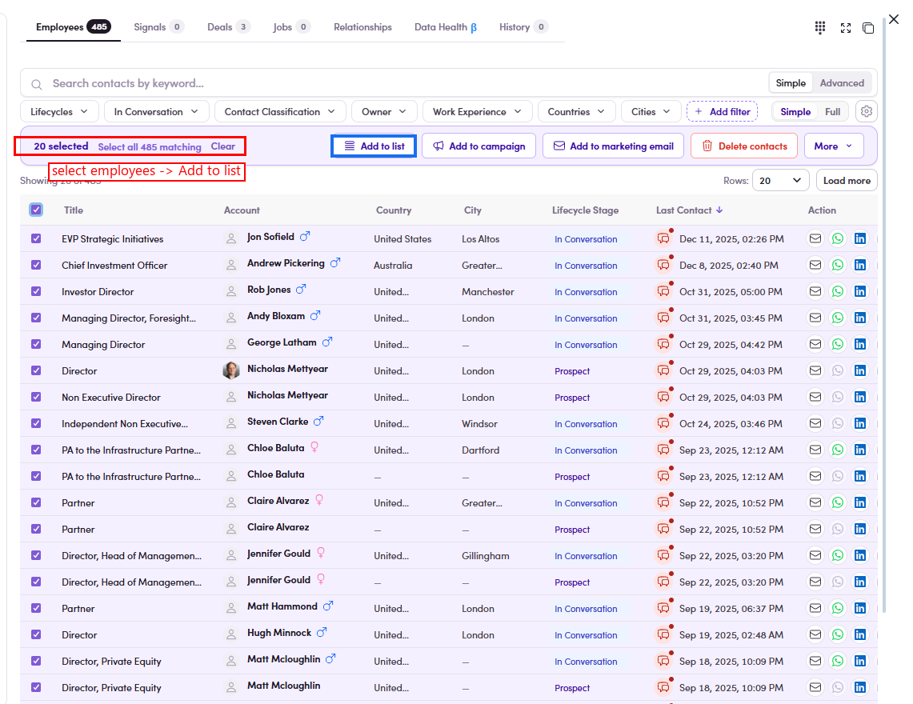
O3.3.3 — employees ticked → 20 selected · Select all 485 matching → Add to list. - Click Add to list → the list picker opens (Apply to = Selected) → tick the target list → Add to N list(s). Good for grabbing everyone at one firm.
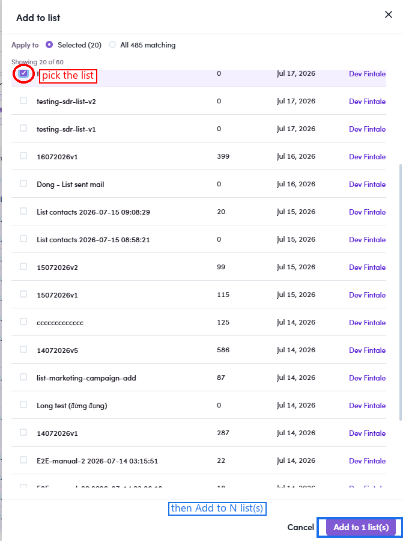
O3.3.4 — from Employees you still pick a list (testing-sdr-list-v3 ticked) → Add to 1 list(s).
O3.x · Edge cases
- Use a filter. Click a filter chip (e.g. Lifecycles · Countries · Work Experience · Owner) → the dropdown lists every value, each with a ✓ (include) and an ✕ (exclude) on the right → click to narrow the table. + Add filter pins more. Filter first, then select (O3.1.2).
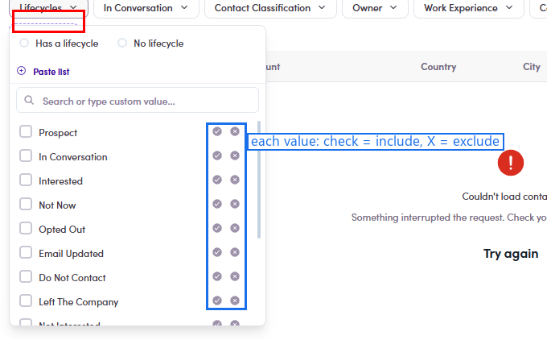
O3.x.1 — the Lifecycles filter open: each value has ✓ include / ✕ exclude (circled). - Use keyword search. Type in the "Search contacts by keyword" box (names · titles · companies) → the table filters live. Combine with filters.
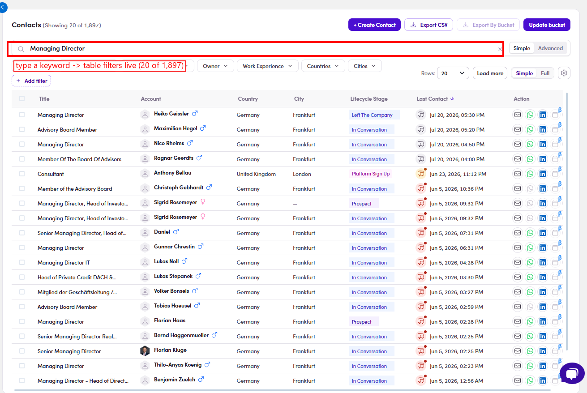
O3.x.2 — keyword "Managing Director" → the table narrows to 1,897 matching. - Select all N matching (bulk). Instead of ticking one page, tick the header checkbox then click "Select all N matching" → the bar shows All N matching selected → Add to list adds the whole filtered set. ⚠ Note: you must have at least one filter or keyword active first — without a filter, Select-all-matching won't let you Add to list (it stops you from dumping the entire database into a list by accident).
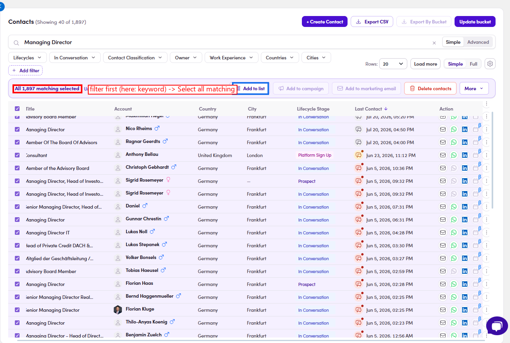
O3.x.3 — with a keyword filter active: All 1,897 matching selected → Add to list. - View a contact's detail first. Click a contact's name/title → the profile drawer opens (facts · Work Experience · Signals · Conversations) so you can check who they are before adding.
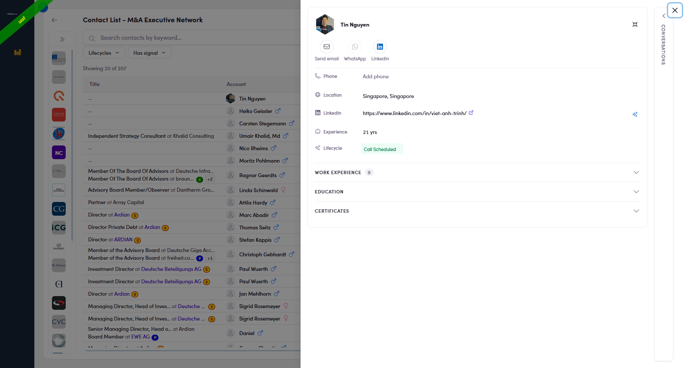
O3.x.4 — the contact detail drawer. - Add via "+ Add contacts" (Campaign / Marketing Email). Open the Campaign (or Marketing Email) → the People tab → click + Add contacts (top right) → the contacts picker opens → filter/tick → Add. This loads that campaign's / ME's audience — the reason SDRs can't add people themselves.
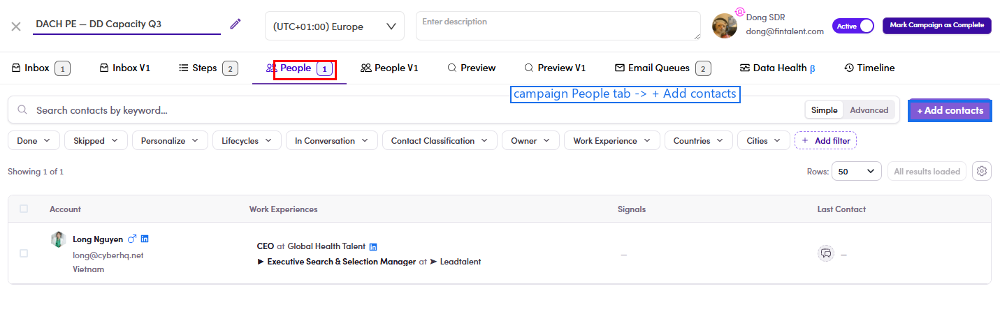
O3.x.5 — a live campaign's People tab (1 person) → + Add contacts (top-right) opens the contacts picker. - Duplicates & SDR-list skip — read the toast.
- Already in this list → the contact is silently skipped; no duplicate row is created and the count doesn't double-count them.
- Already in another SDR list → the contact is skipped, not added. A contact can live in only one SDR list at a time (the exclusivity rule, O2.x.1), so the system protects the existing assignment and shows a toast with the count skipped (e.g. "1 contact(s) skipped — already in another SDR list") — telling you they were skipped because they're already in another SDR list. To move them, first remove them from the old SDR list (O4), then add.
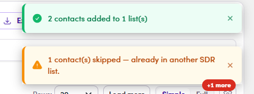
O3.x.6 — the toast: some added, but a contact already in another SDR list is skipped (not moved) — the other rep's assignment is protected. - Verify the count while adding. The point here is just to look — you don't tick any list. Flow:
- Select the contact(s) — this is what makes the Add to list button appear (no selection → no button).
- Click Add to list → the Add to list drawer opens.
- Verify — way A: read the Members column. Every list in the drawer shows its current member count (e.g. 17072026v3 = 359). A quick eyeball — no clicks, no ticking.
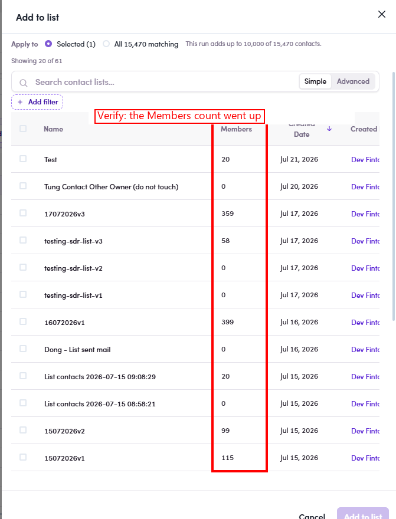
Way A — the drawer's Members column: each list's live count. - Verify — way B: open the list's detail. Click the list's name → its detail opens right there → the Members tab shows the exact count ("Showing X of N") and the actual people.
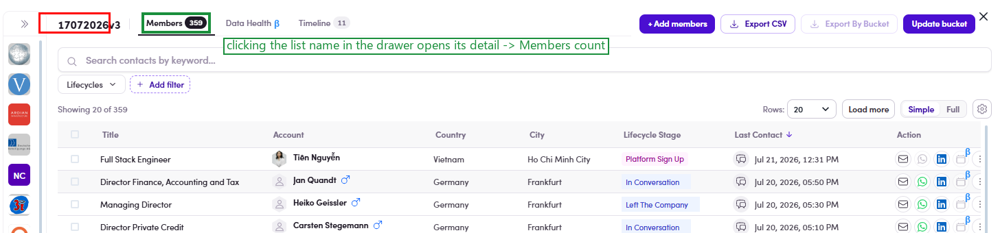
Way B — click the list name → detail opens with the live count (here 359).
- Add to several lists at once. The Add to list drawer isn't one-list-only — tick as many lists as you want (use the search to find them). The confirm button counts your picks: with two lists ticked it reads "Add to 2 list(s)" → click it and the selected contact(s) are added to all those lists in one go.
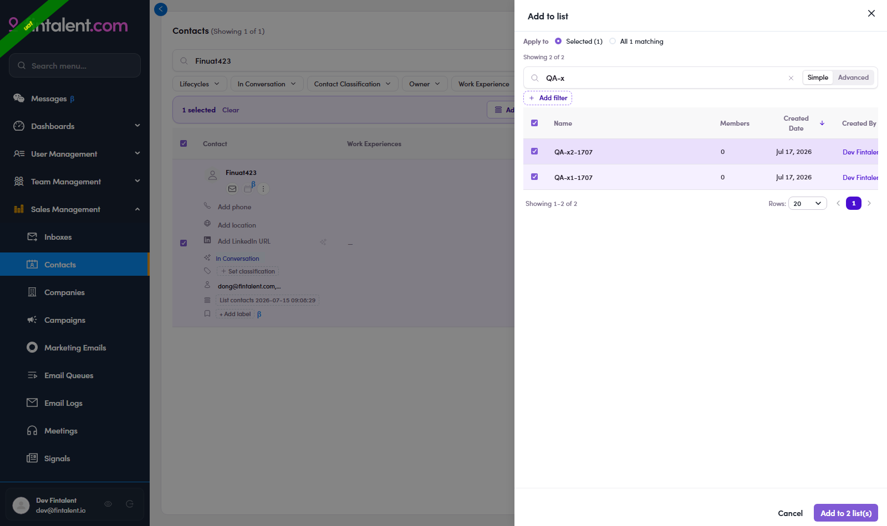
O3.x.8 — two lists ticked in the drawer → the confirm button becomes "Add to 2 list(s)" → Save adds to both.
OPSO4 · Remove members
O4.1 · Remove a member
- Open Segments (Lists) → the Contact tab.
O4.1 — Segments (Lists), Contact tab: every list, with Members / Assignee / Category columns. - Select the list — click its name to open it.
- You land on the list detail → the Members tab (the list's people).
O4.3–O4.4 — the list's Members tab: tick the member(s) you want to remove. - Select the contact(s) — tick the checkbox on each member's row (or the header checkbox to grab the page).
- In the action bar click Remove from list → confirm. Removing only breaks the membership link — the contact itself is untouched (they stay in Contacts and in any other list). Verify the drop in the Members column (Segments page or the list's Members tab; see O3.x.7).
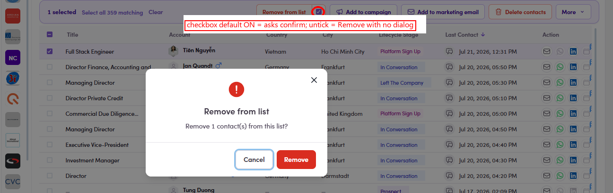
O4.5 — Remove from list in the action bar → the Remove from list confirm dialog.
O4.x · Edge cases
- Narrow with a filter first. Before removing, use the members filter (Lifecycles · keyword · etc.) to show only the people you want gone — then tick and Remove. Saves hunting through the whole list.
- Select all matching (bulk remove). Tick the header checkbox to grab the visible page, or use Select all matching to select every contact matching the current filter (not just the page) → Remove from list clears them in one go.
- Skip the confirm — untick the checkbox. Beside Remove from list in the action bar sits a checkbox that is ticked by default — that's why every Remove pops the Remove from list dialog (so you can't wipe members by accident). Untick it and Remove runs immediately, with no confirm dialog, for the rest of your session; re-tick it to bring the safety prompt back.
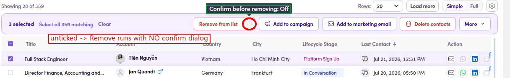
O4.x.3 — the checkbox unticked (tooltip: "Confirm before removing: Off") → Remove runs with no confirm dialog.
OPSO5 · Assign a list to an SDR
Assign a list to an SDR — step by step
- Open Segments (Lists) → the Contact tab.
- Find the list you want to assign (the one you filled in O3).
- In that row's Actions column click the Assign assignee icon (the gear/assign icon — the middle of the three row-action icons: add-members · assign · delete). The current owner (if any) shows in the Assignee column with a role badge.
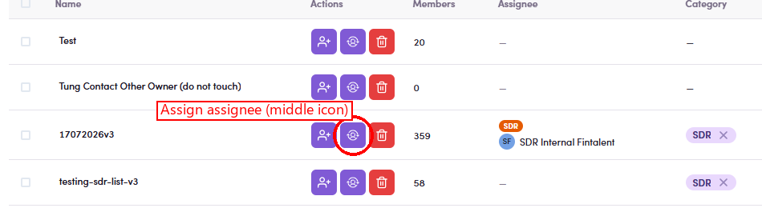
O5.3 — the Actions column: Add members · Assign assignee (middle, circled) · Delete. - The Assign assignee drawer opens — every user with a Roles filter (Admin · Sale Admin · SDR …). Search / filter and tick the assignee — usually the SDR (e.g. Dong SDR).
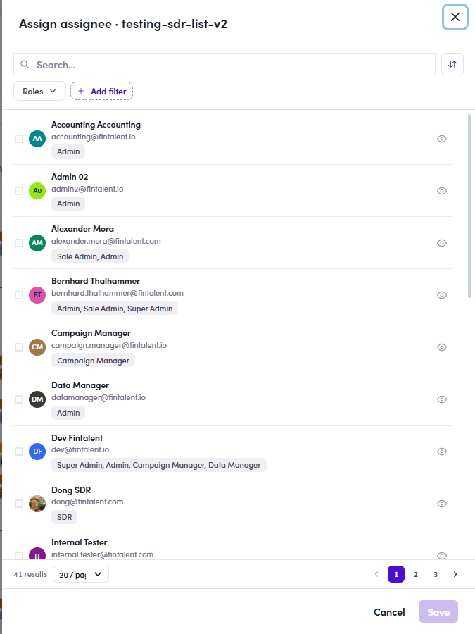
O5.4 — Assign assignee: user list + Roles filter → tick the person. - Click Save → the Assignee column now shows them; the list appears in their Segments (Lists), and because it's an SDR list it's exclusively theirs.
O5.x · Edge cases
- Edit / re-assign the owner. Open the Assign assignee icon on the row again → pick a different person → Save. This replaces the current assignee (the list moves from the old owner's Segments into the new one's).
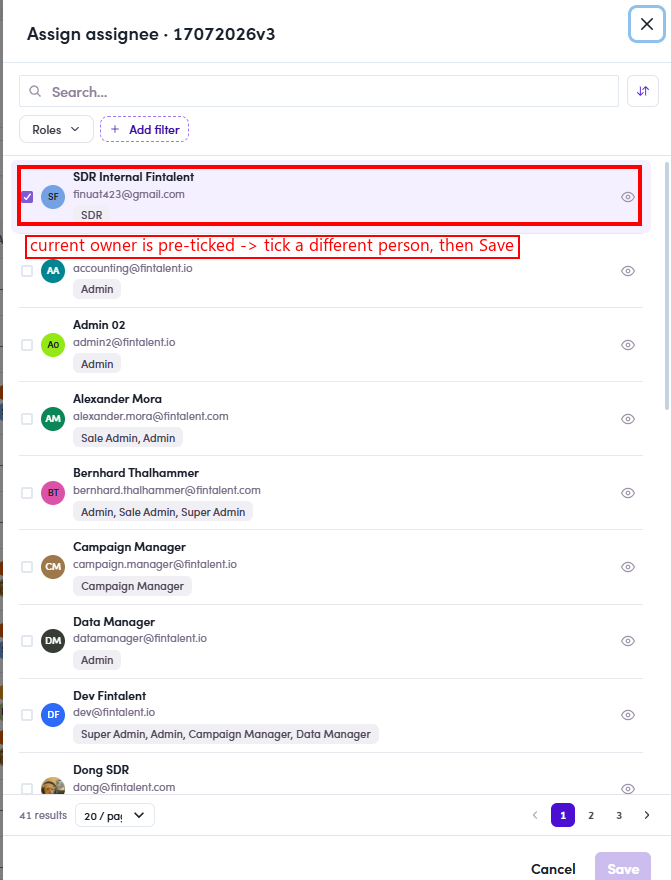
O5.x.1 — re-assigning 17072026v3: the current owner (SDR Internal Fintalent) is pre-ticked → tick a different person → Save. - Bulk-assign several lists at once. Step by step: ① in Segments (Lists) tick the checkbox of each list. ② In the action bar click Assign assignee (N). ③ Pick the mode: Add new (adds this owner alongside existing ones) or Overwrite (replace owners) (clears existing owners first). ④ Tick the assignee → Save.
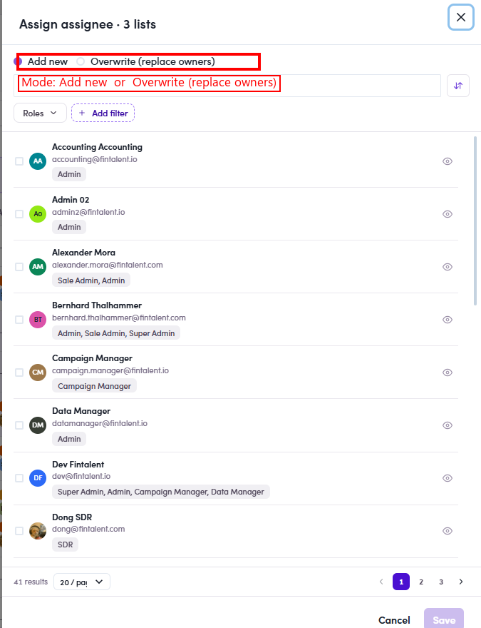
O5.x.2 — bulk Assign assignee across N lists, with Add new / Overwrite (replace owners) mode. - Clear the owner. Fastest way: hover the assignee on the row → a ✕ appears right after their name → click it to remove the owner → the Assignee column shows — again and the list is held by nobody. (You can also open the Assign drawer and clear the selection.)
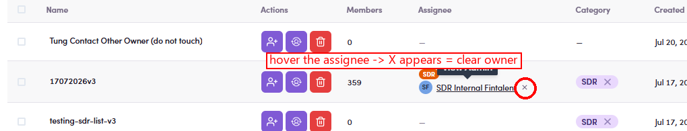
O5.x.3 — hover the assignee → the ✕ (circled) appears; click it to clear the owner in one click.
SDRFlow 1 · Log in & find your workspace
1.1 · Log in
- Open
admin.fintalent.io. If you're not signed in, the login screen appears — Email · Password · Log In.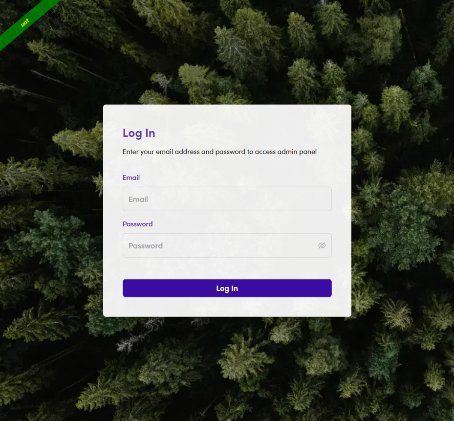
1.1 — the login screen: just Email, Password, Log In. - Type the Email and Password the Admin gave you → click Log In.
1.2 · Your workspace
- Log In drops you on Campaigns — your workspace inside Sales Management. Move around with the left menu (8 items); your account card is bottom-left. No Contacts/Companies pages — your lists and Inbox are the entry points.
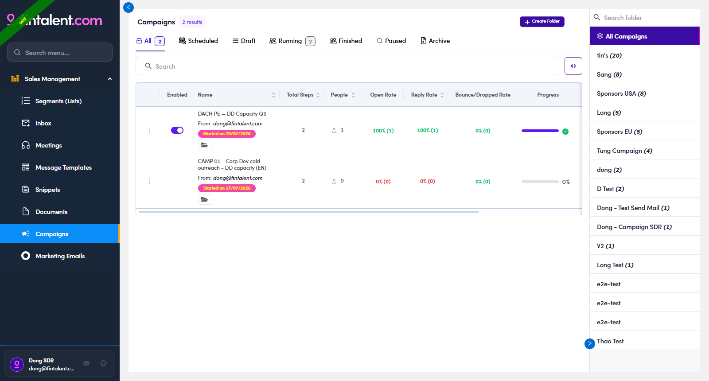
1.2 — where Log In lands you: the Campaigns page, with the Sales Management menu on the left.
Here's what each menu item is for:
| Menu | What you do here | What you can't |
|---|---|---|
| Segments (Lists) | Open the lists assigned to you and work the members — Flows 2–6. | Can't create a list, assign, or add/remove members — Ops owns that (O2–O5). |
| Inbox | Read replies and reply in-thread — Flow 4. | It's a reply queue — nothing to "create". |
| Meetings | — | — |
| Message Templates | Full create / edit / delete — use & build in Flow 3.x.1. | — |
| Snippets | Full create / edit / delete — use & build in Flow 3.x.2. | — |
| Documents | Full create / edit / delete — the 🗂 file library — Flow 3.x.3. | — |
| Campaigns | View / build multi-step campaigns — Flow 7. | Can't add people — Ops loads the audience. |
| Marketing Emails | View / build a single-blast email — Flow 8. | Can't add people — Ops loads the audience. |
1.x · Edge cases
- Already signed in. Opening the address again skips the login screen and drops you straight back into your workspace — no need to log in again. Your session lasts until you log out (1.x.6).
- Forgot / need to change your password. There's no self-serve reset — contact the Admin and they'll help you reset it.
- Where I can open my account? Your account card is at the bottom-left of the sidebar (avatar · name · email · a refresh icon — that's all; no view-as/eye control on an SDR login). Click your name/avatar to open Update Admin Information (5 tabs: General Setting · Billing · Payment · Activities Log · Email Configuration); log out from the account card's control (1.x.6).
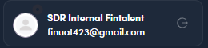
1.x.3 — the account card (avatar · name · email · refresh); click your name to open settings. - View your profile info. On General Setting you can see your First name · Last name · Phone number · Avatar (and Email · Roles). You can't change these yourself — to update your name, phone, or avatar, contact your Admin.
1.x.4 — General Setting: view your name · phone · avatar · Email · Roles (read-only — Admin updates these). - Your email signature. Why it matters: your signature is the sign-off block (name · title · company · phone · booking link) that gets added automatically to the bottom of every email you send — so every message looks consistent and professional and the prospect always knows who you are and how to reach or book you. On the Email Configuration tab you can view your current Signature, Sender Name, and default attachments. You can't edit these yourself — to set or change your signature, contact your Admin.
1.x.5 — Email Configuration: Signature, Sender Name, default attachments (view-only for you). 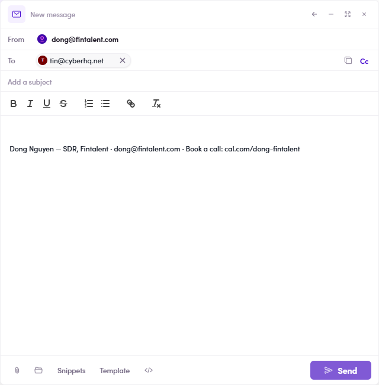
1.x.5 — the payoff: your signature is added automatically to the bottom of every new email you compose — no retyping. - Log out. Use the log-out control on your account card to end the session.
SDRFlow 2 · Find a target contact
2.1 · Open your assigned list
- In the left menu click Segments (Lists) (the first item under Sales Management) → the page shows only the lists assigned to you, with member counts & created date. Empty page → no assignment yet, ask Ops. Your list is fixed — you can't add/remove members.
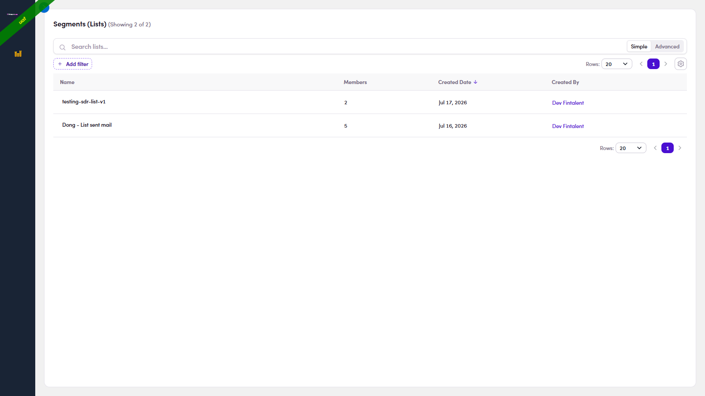
2.1 — the lists assigned to you. Click one to open it.
2.2 · View the contacts
- Inside the list you get the members table: Title · Account (name) · Country · City · Lifecycle Stage · Signals · Last Contact ↓ (sortable) · Action icons (✉ · WhatsApp · LinkedIn). "Showing 0 of N" just means it's still loading.
2.2 — the members table: Title · Account · Country · City · Lifecycle · Signals · Last Contact · Actions.
2.3 · Pick & read a contact
- Click the Account (name) or the Title → the profile drawer opens: action bar Send email · WhatsApp · LinkedIn; facts (Phone · Location · LinkedIn · Experience · Lifecycle · Labels); collapsible Work Experience · Education · Certificates; the Conversations rail on the right edge.
2.3 — the profile drawer opens over the list: everything you need to decide and personalize. - Open Work Experience (the number = how many roles) for their real role, firm and dates — your personalization goldmine.
2.4 — Work Experience expanded: roles + companies + dates. - Check Signals — a fresh reason to reach out. The Signals column has two kinds, and knowing which is which tells you how to open the conversation:
- ⚡ Signal (news) — a recent event at the company (a fund launch, an acquisition, a live auction, e.g. "BauWatch ticks live…", "Wafra launches fund…"). This is the type that can draft an email for you — see Flow 3 · Way 4.
- 💼 Job (title / role change) — a person-level change such as a new title or role (e.g. "Associate Partner – M&A…"). Good context for a personal note, but it does not pre-draft an email.
2.5 — the two signal types: ⚡ Signal = company news (red), 💼 Job = title/role change (blue). 2.5 — click a signal → its detail opens: headline · source · date, plus Use this email content to reply / Copy email — EN / DE (⚡ Signal only). 2.5 — "+N" clicked: every signal for the contact, each with its age.
2.x · Edge cases
- Filter by Lifecycles. Click Lifecycles → every value has a ✓ and an ✕:
- ✓ include = keep only contacts at that stage (show them, hide the rest).
- ✕ exclude = hide contacts at that stage (drop them, keep the rest).
- Several ✓ together = OR — a contact matches if it's at any ticked stage.
2.x.1 — Lifecycles filter: ✓/✕ per value, Has/No radios, Paste list. - Keyword search. The box over the table searches names, titles, companies, and remembers Recent searches. Search + Lifecycles combine.
2.x.2 — keyword search with Recent searches memory. - "Held by teammates" — check before you email.
Why: so two reps don't work the same company at once. If a firm already has someone at Interested or higher (Interested · Call Scheduled · Platform Sign Up · In Project · Project Completed), a teammate probably has a live deal there — emailing a different person makes the firm hear two Fintalent voices and can hurt that deal.
How: open your list → expand the company rail (») → click a company (①). The table then splits in two:- White rows = yours — contacts in your list; work them normally (never shown twice).
- Gray rows = held by a teammate — not in your list but in a teammate's at a hot stage; a "N held by teammates" pill shows the count (②). Don't email them — hover the ⚠ to see who holds whom, then align with that teammate first.
2.x.3 · step — the left company rail is collapsed to logos only by default; click the » toggle at its top to expand it. 2.x.3 · result — ① pick a company → ② the "N held by teammates" pill + gray rows (Case 2). - View a company's detail. In the left rail, click the company name → its detail drawer opens on the right with the firm's profile: a short description, plus Alias names · Industry · Website · Location · LinkedIn · Email domains · Parent, and a Lists · Add to list control. Use it to sanity-check the firm before working its people.
2.x.4 — click the company name in the left rail → the company detail drawer (Industry · Website · Location · LinkedIn · Email domains · Parent). - Sort by Country / City / Last Contact. Country, City and Last Contact are sortable columns — click the header to sort (click once = A→Z / oldest→newest, click again = reverse; empty values group first). Sort by Country / City to work one geography at a time; sort by Last Contact to surface who's gone quiet (feeds Flow 5).
2.x.5 — click Country · City · Last Contact headers to sort. - Filter by Has signal (two levels). Besides Lifecycles (2.x.1), the members bar carries a Has signal filter — so the bar over your contacts is Lifecycles · Has signal, and the company rail has its own. It's the same word at two levels:
- Members bar (right, over contacts) → Has signal : Yes keeps people who personally have a signal; the Signals column then has a value on every row (⚡ news / 💼 job). E.g. 359 → 246.
- Company rail (left, over firms) → expand it (») and its bar shows Lifecycle · Has signal (+ 🔍 search). Has signal : Yes keeps firms that have a signal — the best ones to open with. E.g. 111 → 29.
2.x.6 — members bar = Lifecycles · Has signal; company rail = Lifecycle · Has signal (+ 🔍 search). - Simple vs Full view. Top-right of the table is a Simple / Full toggle. Simple (default) shows the lean columns; Full adds more detail per row. Switch anytime — it only changes what you see, not the data.
- Show / hide columns. The gear ⚙ button (next to the Simple/Full toggle) opens a column picker — tick the columns you want shown, untick the rest. Handy when you only care about Signals or Last Contact.
SDRFlow 3 · Send a 1:1 email
4.1 · Four ways into compose
- Segments (Lists) → open your list → find the contact's row.
- In the Action column (right side) click the ✉ icon → compose opens for that contact, without leaving the list.
Way 1 — the ✉ icon in the row's Action column (far right).
- Open the contact (click the name/title) → the profile drawer opens.
- In the action bar at the top click Send email → compose opens.
Way 2 — the Send email button in the profile action bar (top-left of the drawer).
- Open the contact → on the right edge click the vertical CONVERSATIONS tab to expand the rail.
- In the rail click New Email → compose opens, with the existing thread history right there.
Way 3 — the Conversations rail: thread list + New Email (and ↩ reply arrows).
- Segments (Lists) → open your list → look at the Signals column → click a signal on the contact's row → the signal detail opens. (What the two signal types mean → Flow 2 · Signals column.)
The Signals column — click a signal to open its detail. - In the signal detail, top-right, click Use this email content to reply.
Use this email content to reply (circled) — or Copy email — EN / DE if you only want the text. - Compose opens with the body already written from the signal. To is empty — add the contact → check From / Subject → personalise the draft → Send (finish at 4.2 below).
Compose prefilled from the signal — a ready draft you edit, address, and send.
Replying to someone who already wrote to you is a separate job — see Flow 4 · Answer replies.
4.2 · Compose & send (same window for all 4 ways)
The whole job here is to send a good email successfully — 4 steps:
- Check From / To / Cc. From is your own mailbox (filled in by default). To is the contact you started from (already pre-filled) — you can also type extra recipients here. To copy someone else, click Cc at the right of the To row → a Cc field appears → type their email and press Enter (it becomes a chip; the ✕ removes it).
3.1 — From · To · Cc: click Cc (circled), then type the email to copy someone in. - Type the Subject yourself in "Add a subject" at the very top. For a new email it starts empty and does not auto-fill, even from a Template (known bug). The Send button blocks an empty subject — so you can't forget.
3.2 — the subject box (red frame) — type it yourself. - Write your message in the body (personalize with their role & signal from Flow 2). Want to start from a Template, drop in a Snippet, or attach a file? See Edge cases (4.x).
- Proofread → Send. It auto-logs into Conversations, your signature (Flow 1.x.5) is appended automatically, and there is no recall.
4.x · Edge cases — write faster with Templates · Snippets · Documents
Three helpers speed up composing. For each: use it in the compose bar, and build your own from its menu page. ✅ your SDR account can create / edit / delete all three.
4.x.1 · Templates — full pre-written emails
- Use it in compose: click Template in the compose bar → Insert appends to your draft, Replace overwrites it (incl. the EN 01–05 set). Even from a Template the subject box still needs typing (4.2 bug).
Use — Template: Insert / Replace + search. - Build your own: Message Templates (left menu) → + Create New → fill Name* (how it shows in compose, e.g.
EN 06 - Follow-up) · Topic* · Source Type · Subject EN / DE · body EN / DE (two rich-text editors) → Create. Edit/delete via row actions; filter by Topics.Create — Name* · Topic* · Subject EN/DE · rich-text body EN/DE.
4.x.2 · Snippets — short reusable blocks
- Use it in compose: click Snippets → search → click = inserted at the cursor (EN | DE toggle).
Use — Snippets: search + EN/DE, insert at cursor. - Build your own: Snippets (left menu) → + Create New → Private toggle (ON = only you; OFF = shared) · Name* · Type · Content English* / Content German → Create. Edit/delete by hovering the row.
Create — Private toggle · Name* · Type · Content EN*/DE.
4.x.3 · Documents & files — attachments
- Use it in compose: 📎 uploads a file from your computer; 🗂 attaches from the shared Document library (Common · Contact · Campaign filter checkboxes, Published files only).
Use — 🗂 Select Documents: shared files (Published only). - Build the library: Documents (left menu) → + Create New → Name* · Type* (Common / Contact / Campaign — the compose tab it lands under) · Status* (Draft → Published; only Published is attachable) · Is Star · Is Public · File* → Upload File → Create. Retire with Archived, not delete.
Create — Name* · Type* · Status* (Draft→Published) · Upload File.
SDRFlow 4 · View replies & answer replies 🔴
5.1 · View & answer a reply
- Open the replies: click Inbox in the left menu — one row per contact who wrote back, showing Account | Last Email (subject + preview + date). Auto-replies/OOO land here too.
4.1 — Inbox: one row per reply (Account | Last Email). - Spot which messages are replies — and glance at the auto chip. The clearest signal is the direction arrow next to the sender in the thread:
- ↙ inbound arrow + the contact's name = a reply from the prospect (their words) — the message to read and answer.
- ↗ outbound arrow + your own name = an email you sent (e.g. "Dong SDR ↗").
Chip On What it means Your move Delivered your send Sent & delivered — the prospect hasn't opened it yet. Give it time, then follow up. Open your send The prospect opened your email (or it isn't classified yet). Warm signal — worth a follow-up. ⚠️ Dropped your send The email did NOT go out — it failed to send. Send it again — this one needs your attention. Interested · Call Scheduled their reply The system read the reply as a positive signal. Read it, then set the contact's Lifecycle. Not Interested · Out Of Office · … their reply The system's quick read of what they wrote. Read it, then set the Lifecycle. 4.2 — ① a reply = ↙ inbound arrow + a real chip ("Out Of Office"); ② your send = ↗ outbound arrow + your name; ③ your send's chip = a delivery status (Delivered · Open · ⚠️ Dropped). - Read the email. Click the row → the contact opens on Conversations: the thread list is on the left, the selected message on the right, Expand all unfolds the whole exchange. Read what they actually wrote — the chip is only a hint.
4.3 — Conversations: thread list (left) + the message (right). The three action arrows sit at the top-right of the open message: ① Reply all · ② Reply · ③ Forward. - Decide: reply or not. If it needs an answer, reply (5.5). If it doesn't (e.g. a plain "not interested" or an auto-reply), skip replying and just classify the contact (Flow 3) so it leaves the queue.
- Click Reply — the single ↩ arrow at the top-right of the open message (circled below). It answers only the person who wrote — the normal choice for 1:1 outreach. (The double-arrow Reply all and the Forward arrow sit right next to it — see Edge cases.)
4.5 — the Reply button (single arrow) at the top-right of the message. - What opens: a compose window with the subject already set to RE: …, the sender pre-filled in To, and the original message quoted below. It stays in the same thread.
4.6 — Reply clicked: RE: subject, the sender in To, the quoted original. - Write your message → Send.
5.x · Edge cases
- Reply all — the double ↩↩ arrow (left of Reply, circled below) answers the sender plus everyone else on the thread's To/Cc. Use it only when several people are genuinely in the conversation (an assistant or colleague was copied). Same compose window as Reply, but To/Cc are pre-filled with everyone.
4.x.1 — the Reply all button (double arrow), leftmost of the three. - Forward — the ➡ arrow (right of Reply, circled below) sends this message on to someone new. Same window, but To starts empty for you to type the new recipient; the original message is carried in the body.
4.x.2 — the Forward button (arrow pointing right), rightmost of the three. - Filters. The Inbox bar carries the full set; + Add filter opens Customize Quick Filters (pin filters, Reset defaults) to build your own quick bar. Use it to slice big queues (only DACH, only CFOs).
Filter What it narrows · how to use Lifecycles by contact stage — same ✓/✕ tool as 2.x.1 Contact Classification contact type: Talent · Client · Other (each ✓/✕; Has/No radios + Paste list) Owner which teammate owns the contact — pick yourself to see only yours Work Experience career facts — the power filter (fields below) Countries · Cities the contact's location — pick a geography (DACH, UK…) + Add filter Customize Quick Filters — pin/unpin which filters show on the bar (Reset defaults) Every dropdown works the same: each value has a ✓ include (keep only these) / ✕ exclude (hide these); Has / No … radios catch records with/without any value; Paste list takes one value per line; several ✓ together = OR.
Work Experience filters by career, not just the contact record. A top Match any (OR) / Match all (AND) toggle decides whether a person must meet one or all of: Company type (Sponsor · Corporate · Portfolio) · Email validity (Valid · Invalid · Validating · None) · Currently / Past · Position (job title) · Company (or Has / No linked company, plus + Filter by linked company: city · country · bucket · classification) · Company Description · Company country / city. E.g. Work Experience → Company type = Sponsor took a 27-reply queue to 25 (every remaining row a sponsor firm).
4.x.3 — the Work Experience filter inside Inbox; + Add filter pins more. 5.x.3 · panel — the full Work Experience panel: Match any/all · Company type · Email validity · Currently/Past · Position · Company/linked · Description · country/city. - The orange "In Queue" tag. A message tagged In Queue is accepted but not sent yet (waiting in the send queue). It clears to a normal sent message once it goes out — it just means "on its way", don't re-send.
4.x.4 — the orange In Queue tag on a message (circled): accepted, waiting in the send queue, not sent yet.
SDRFlow 5 · Follow up on silent prospects
- Open your assigned list: left menu → Segments (Lists) → open your list.
5.1 — your assigned lists; click one to open it. - View the contacts: the members table. Look at the Last Contact column (far right) — each row has a 💬 icon next to its date, the follow-up radar.
5.2 — the members table; the Last Contact column with its 💬 icons is on the right. - Pick who's overdue: click the Last Contact header to sort, and read the 💬 colors — red = waited longest, start there; yellow = coming due; gray = fresh. The red dot means "due" and clears once you make contact.
5.3 — 💬 icons shading gray → yellow → red as Last Contact ages. - Read the context. Click the 💬 icon on that row → a conversation-first drawer opens with the last thread on screen. Read the exchange to confirm they haven't replied yet (that's what "follow up" means) and to pick your angle.
5.4 — 💬 clicked: the last thread on screen (New Email · ↩ reply · 1/N pager). - Nudge them. Then either ↩ reply to the last email in that thread (keeps the context), or click New Email for a fresh angle. Sending resets Last Contact → the row drops down and the 💬 turns gray. Use the 1/N pager (top right) to step to the next contact without going back to the list.
- 2–3 unanswered nudges → label Not Now / Not Interested (Flow 3) so they leave your rotation.
| 💬 state | Meaning | Do |
|---|---|---|
| Gray, no dot | Recent (~under 2 weeks) | Nothing yet |
| Yellow + dot | ~2–4 weeks silence | Plan the nudge |
| Red + dot | ~A month+ — overdue | Click & follow up now |
SDRFlow 6 · Reach out on WhatsApp or LinkedIn
7.1 · Open a WhatsApp chat
- Open the contact (Flow 2) → the action bar shows Send email · WhatsApp · LinkedIn.
6.1.1 — the action bar: Send email · WhatsApp · LinkedIn. - Click WhatsApp. Green = a usable phone is on file → it opens a WhatsApp chat in a new tab (
wa.me/‹number›). Gray = no phone (or the number is too ambiguous to dial) → nothing happens; ask your Admin to add a phone.
7.2 · Open the LinkedIn profile
- Click LinkedIn (action bar, or the icon in a row's Action column). Blue = a valid LinkedIn URL is on file → it opens that stored URL as-is in a new tab (the app only checks it's a
linkedin.com/lnkd.inlink — it doesn't rewrite it). Gray = no/invalid URL → nothing happens; ask your Admin to add the URL.6.2.1 — the ✉ · WhatsApp · LinkedIn icons in each row's Action column (coloured = usable).
SDRFlow 7 · Manage campaign
SDRFlow 8 · Manage ME
SDRFlow 9 · Using filters
Filters sit on three surfaces, each with a different set:
| Surface | Filters you get | Where |
|---|---|---|
| Your list — members bar (right) | Lifecycles · Has signal | Flow 2 |
| Your list — company rail (left) | Lifecycle · Has signal | Flow 2.x.6 |
| Inbox bar | Lifecycles · Contact Classification · Owner · Work Experience · Countries · Cities · + Add filter | Flow 4 |
How a filter dropdown works everywhere: each value has a ✓ include (keep only these) and an ✕ exclude (hide these); Has / No … radios catch records with/without any value; Paste list takes one value per line. Several ✓ together = OR.
All screenshots below are real runs on an SDR login — watch the count before → after and note why the rows change.
10.1 · Lifecycles — filter your contacts by stage
On your list and in the Inbox. ✓ include keeps only that stage; ✕ exclude hides it; several ✓ = OR; plus Has / No lifecycle radios and Paste list.
10.2 · Has signal — on your list, at two levels
Has signal sits in two places on your list and they mean different things:
- Members bar (right, over contacts) — keeps people who personally have a signal; the Signals column shows it (⚡ news / 💼 job).
- Company rail (left, over firms) — keeps companies that have a signal.
10.3 · Inbox filters — slice a big reply queue
The Inbox bar (Flow 4) carries the full set. Combine them to zero in (e.g. only DACH CFOs who replied):
| Filter | What it narrows · how to use |
|---|---|
| Lifecycles | by contact stage — same ✓/✕ tool as 10.1 |
| Contact Classification | contact type: Talent · Client · Other (each ✓/✕; Has/No radios + Paste list) |
| Owner | which teammate owns the contact — pick yourself to see only yours |
| Work Experience | career facts — see 10.4 |
| Countries · Cities | the contact's location — pick a geography (DACH, UK…) |
| + Add filter | Customize Quick Filters — pin/unpin which filters show on the bar (Reset defaults) |
10.4 · Work Experience — the power filter (every field)
Filters people by their career, not just their contact record. Top toggle Match any (OR) / Match all (AND) decides whether a person must meet one or all of:
- Company type — Sponsor · Corporate · Portfolio (each ✓ include / ✕ exclude) — used in the 10.3 demo.
- Email validity — Valid · Invalid · Validating · None.
- Currently / Past — the role is ongoing or historical.
- Position — job title (e.g. "Managing Director").
- Company — a specific firm; or Has / No linked company, plus + Filter by linked company (its city · country · bucket · classification).
- Company Description — a keyword in the firm's description.
- Company country / city.
SDRFlow 10 · FAQ & edge-case index
| Symptom / question | Answer |
|---|---|
| I forgot my password / want to change it | No self-serve reset — contact the Admin (Flow 1.x.2). |
| Where do I change my name / signature? | Account card (bottom-left) → General Setting or Email Configuration (Flow 1.x.3–1.x.5). |
| Where do I land after logging in? | On Campaigns. Re-opening while signed in skips login (Flow 1.2, 1.x.1). |
| My Segments page is empty | No list assigned yet — ask Ops (O5). |
| Can I edit a contact's phone / location / LinkedIn? | No — these are read-only for you; ask your Admin to update them. Experience is read-only (shown in yrs). |
| WhatsApp / LinkedIn icon is gray | No phone / LinkedIn URL on file. Nothing to click. |
| Subject box is empty when composing | Always type it yourself (Flow 3.1). |
| I can't edit the chips on messages | Correct — the system assigns them. You classify at contact level (Flow 3). |
| Orange "In Queue" tag on a message | Accepted, waiting in the send queue — clears once sent. Don't re-send (Flow 4.x.4). |
| Gray contacts I don't recognize at the bottom of my list | You selected a company → the "held by teammates" block. Coordinate first (Flow 2.x.3). |
| Campaign / Marketing Email — what can I do? | Permissions still being confirmed — those flows (8, 9) aren't documented yet. |
| I can't find Contacts/Companies pages | By design — SDR has no Contacts/Companies; those are Ops tools (O3). Your lists and Inbox are the entry points. |
| (Ops) How do I get contacts to an SDR? | Create a list (O2) → add contacts (O3) → assign it to the SDR (O5). |